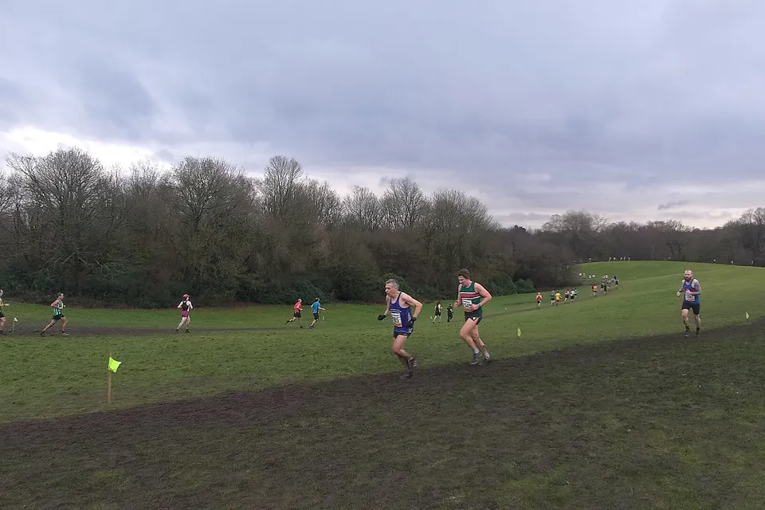

Crossläufe und Winterlaufserien: Wettkampfspaß in der kalten Jahreszeit
Manchester Area Cross Country League, Heaton Park, Februar 2026. Foto: King Februarius, Wikimedia Commons, CC0
Wenn die Tage kurz werden, fängt für viele Läuferinnen und Läufer die schönste Wettkampfzeit erst an: Crossläufe über Wiesen und Waldwege und Winterlaufserien mit mehreren Terminen bis in den März. In unserer Liste stehen von November bis März rund 90 Crossläufe und über 130 Termine von Winterlaufserien. Hier erfährst du, was dich erwartet – und wo du starten kannst.
Crosslauf: zurück zu den Wurzeln
Ein Crosslauf führt abseits der Straße über Gras, Waldboden, kleine Hügel und manchmal durch richtig viel Matsch. Die Strecken sind meist kurz – oft 5 bis 10 Kilometer, häufig als Runde, die mehrmals gelaufen wird. Das macht Crossläufe ideal für den Winter: Du bist nie lange unterwegs, die Zuschauer sehen dich mehrmals vorbeikommen, und die Stimmung ist familiär.
Das Schönste daran: Auf einer Crossstrecke zählt die Uhr weniger als sonst. Jede Runde ist anders, jeder Anstieg kostet Kraft, und am Ende sind alle gleich schmutzig. Viele erleben das als Befreiung vom Blick auf die Pace. Nebenbei trainierst du Kraft, Gleichgewicht und Laufstil – genau das, was dich im Frühjahr auf der Straße schneller macht. Wer das gezielt unterstützen will, findet in „Krafttraining für Läufer“ passende Übungen.
Winterlaufserie: dranbleiben mit System
Eine Winterlaufserie ist eine Reihe von Läufen am selben Ort, meist alle zwei bis vier Wochen. Oft werden die Strecken von Termin zu Termin länger – ein eingebauter Trainingsplan, der viele bis zum ersten Halbmarathon im Frühjahr trägt. Wer alle Läufe schafft, kommt in die Gesamtwertung, und schon dieser Termin im Kalender hilft, im Winter nicht auf dem Sofa zu bleiben.
In unserer Liste ist jede Serie eine Veranstaltung: Klappst du sie auf, siehst du jeden Termin mit seiner eigenen Distanz.
Winterlaufserien zum Mitmachen
| Serie | Termine und Distanzen |
|---|---|
| Ismaninger Winterlaufserie (bei München) | 13.12., 17.01. und 21.02. – 13, 17 und 21,1 km |
| Nürnberger Winterlaufserie | 15.11., 17.01. und 07.02. – 5 bis 20 km |
| Bühlauer Winterlauf Serie (Dresden) | 05.12. bis 06.03., vier Termine – bis 40 km |
| Bramfelder Winterlaufserie (Hamburg) | 15.11. bis 21.03., fünf Termine – 9,3 bis 23,3 km |
| Winterlaufserie Wilhelmsburg (Hamburg) | 10.01., 07.02. und 07.03. – 5 bis 20 km |
| HKK-Winterlaufserie (Bremen) | 10.01., 07.02. und 07.03. – 5 bis 20 km |
| Winterlaufserie Alfter (bei Bonn) | 15.11. bis 24.01., alle zwei Wochen – 10, 15 und 20 km |
| Winterlaufserie Rheinzabern (Pfalz) | 13.12., 10.01. und 07.02. – 10, 15 und 20 km |
| ASV Duisburg Winterlaufserie | 23.01., 13.02. und 13.03. – 5 bis 21,1 km |
| VCM Winterlauf (Wien) | 13.12., 24.01. und 07.03. – 5 bis 21,1 km |
| Winterlauf Linz | 20.12. und 28.02. – 5, 10 und 15 km |
| Floro Winterlaufcup Gmunden | 13.12. bis 28.02., vier Termine – rund 8 km |
Alle Winterläufe und Winterlaufserien in der Liste
Crossläufe und Crossserien
- Göttinger Cross-Serie: drei Läufe am 14.11., 05.12. und 09.01., jeweils 5 und 10 km – schon in der 63. Auflage.
- Hamelner Cross-Winterlaufserie: von November bis Ende Februar, 5 und 10 km.
- Hegau-Bodensee Crosslaufserie: Radolfzell, Stockach, Konstanz und die Insel Reichenau – 6,6 bis 9 km.
- Crosslaufserie Oberschwaben: Blitzenreute, Bad Waldsee, Vogt und Birkenhard, je 7 bis 8 km.
- Winter Crosslaufserie Goldbach (Unterfranken): jeden Sonntag im Spätherbst ein Termin über 10 km.
- Rennbahncross in Herxheim (Pfalz, 15.11.): 5 und 9 km rund um die Rennbahn.
- 88. Friedeholz Cross in Syke (29.11.): einer der traditionsreichsten Crossläufe im Norden.
- 161. Crosslauf des Weißenseer Sportvereins (Berlin, 06.12.): 12 km.
- Schokocross in Bremen am 26. Dezember: 8,2 km gegen das Weihnachtsessen.
- STB Cross in Bern (23.01.) und SuperCross Biel-Benken bei Basel (31.01.) für alle in der Schweiz.
- Crosslauf Freistadt (15.11.), Crosslauf im Zwettltal (05.12.) und Crosslauf Horn (28.11.) in Österreich.
Rund um Silvester gibt es auch Crossläufe – etwa den Gummersbacher Silvestercrosslauf. Mehr dazu im Beitrag „Silvesterläufe“.
So kommst du gut durch Matsch und Kälte
- Schuhe mit Profil: Trailschuhe greifen auf nassem Gras viel besser als Straßenschuhe. Spikes brauchst du für den Anfang nicht.
- Schuhe fest schnüren: Im tiefen Boden zieht der Schlamm gern am Schuh. Ein Doppelknoten erspart dir die Suche.
- Lieber zu leicht als zu warm: Beim Start darf dir ruhig etwas kühl sein. Mütze und Handschuhe sind trotzdem eine gute Idee – die kannst du unterwegs ausziehen.
- Gut aufwärmen: Bei Kälte brauchen die Muskeln länger. Ein paar Minuten lockeres Einlaufen machen den Start viel angenehmer.
- Tempo nach Gefühl: Am Hang und im Matsch hilft die Pace auf der Uhr wenig. Lauf nach Atmung und Gefühl.
- Trockene Sachen für danach: Wechselkleidung und eine Tüte für die schmutzigen Schuhe gehören in jede Crosstasche.
Noch mehr Tipps für die kalte Jahreszeit stehen in „Laufen im Winter“.
Tipp: Viele Crossläufe und Winterserien sind kleine Vereinsveranstaltungen, oft mit Nachmeldung am Lauftag. Schau trotzdem vorher auf die Seite des Veranstalters, denn manche Serien haben ein Teilnehmerlimit. Und nimm deine Laufgruppe mit: Gemeinsam macht der Matsch doppelt so viel Spaß.
So findest du deinen Lauf
- Öffne die Liste mit allen Crossläufen oder allen Winterläufen.
- Stell unter „Ort & Umkreis“ deinen Wohnort ein – so siehst du sofort, was in deiner Nähe liegt.
- Oder such auf der Karte den Lauf mit der schönsten Strecke.
Fazit
Der Winter ist keine Wettkampfpause. Ein Crosslauf bringt Abwechslung und Spaß in die dunkle Jahreszeit, eine Winterlaufserie gibt dir Termine, an denen du dranbleibst. Such dir einen Lauf in deiner Nähe aus und stell dich an die Startlinie. Im Frühjahr wirst du merken, wie gut dir der Winter getan hat.
Finde deinen Winterlauf
Crossläufe und Winterlaufserien in Deutschland, Österreich, der Schweiz und Südtirol – mit Terminen, Distanzen und Link zum Veranstalter.
Termine und Distanzen nach unserer Liste, Stand 9. November 2026. Ob ein Lauf schon ausgebucht ist und ob du nachmelden kannst, steht beim Veranstalter.